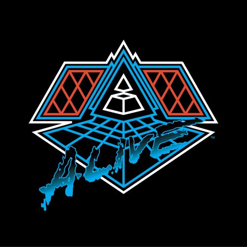

Ingredients List
- Robot Rock / Oh Yeah - 6:28
- Touch It / Technologic - 5:30
- Television Rules the Nation / Crescendolls - 4:51
- Too Long / Steam Machine - 7:02
- Around the World / Harder, Better, Faster, Stronger - 5:43
- Burnin' / Too Long - 7:12
- Face to Face / Short Circuit - 4:55
- One More Time / Areodynamic - 6:11
- Aerodynamic Beats / Gabrielle ,Forget About the World - 3:32
- Prime Time of Your Life / Brainwasher /
Rollin' & Scratchin' / Alive - 10:22 - Da Funk / Daftendirekt - 6:37
- Superheroes / Human After All / Rock'n Roll - 5:41
- Human After All / Together /
One More Time / Music Sounds Better with You - 9:59
Taste Our Coffee Here: